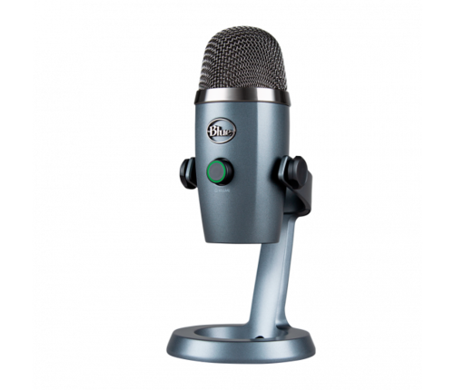

MICROFONE HYPERX SOLOCAST
PEDESTAL AJUSTÁVEL
USB
Para editores de vídeo, streamers e gamers que procuram um microfone USB com alta qualidade de som, o HyperX SoloCast é obrigatório. Ele é Plug N Play, tornando-o simples de usar, com alguns dos nossos recursos favoritos como o sensor de toque para silenciar e o LED indicador de microfone em mudo. O microfone versátil possui um pedestal ajustável e também é compatível com a maioria das hastes, assim você pode colocá-lo na mesa ou na haste. Certificado pela TeamSpeak e Discord, e compatível com OBS, XSplit, Streamlabs OBS e uma série de outros programas, sendo um microfone extremamente amigável para streamers.
R$ 499,99 ADICIONAR AO CARRINHO
